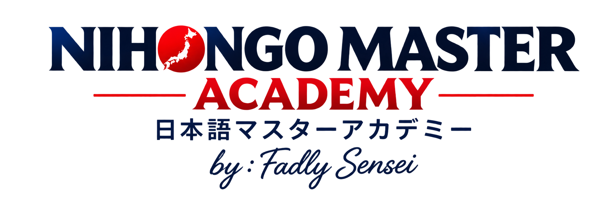

JLPT • BEGINNER
日本語 N5
Fondasi bahasa Jepang: huruf, kosakata, dan tata bahasa dasar.

Mulai perjalanan bahasa Jepang Anda. Pelajari huruf, kosakata, tata bahasa, dan uji kemampuan secara bertahap.
Pilih level untuk mulai belajar.
Fondasi bahasa Jepang: huruf, kosakata, dan tata bahasa dasar.
Materi lanjutan setelah menguasai kemampuan dasar N5.
Pengembangan kemampuan bahasa Jepang tingkat menengah hingga mahir.
Empat area penting untuk pemula.
Kenali karakter dasar bahasa Jepang.
Sentuh kartu untuk melihat cara baca. Gunakan tombol untuk berpindah kartu.
Panduan lengkap 46 Hiragana dan 46 Katakana. Ikuti nomor serta arah panah pada setiap goresan.
Ikuti nomor 1, 2, 3, dan seterusnya. Angkat alat tulis sebelum memulai goresan berikutnya.
Lihat karakter di depan kartu, coba ingat bunyinya, lalu tekan kartu untuk membuka romaji. Kartu tetap memakai format flashcard seperti versi awal.
Unit 1 — 20 Kanji pengenalan. Pelajari arti, bacaan, dan contoh pemakaiannya.
Ingat arti terlebih dahulu, lalu buka bacaan dan contoh katanya.
Mulailah dengan mengenali bentuk dan makna. Bacaan Kanji dapat berubah sesuai kata dan konteks.
Flashcard kosakata dasar untuk pemula.
Pola kalimat dasar N5 dengan penjelasan dan contoh.
Untuk menyatakan identitas atau menjelaskan sesuatu secara sopan. Partikel は dibaca “wa” sebagai penanda topik.
Saya adalah pelajar.
Bentuk negatif sopan dari です.
Saya bukan guru.
Tambahkan か di akhir kalimat untuk membentuk pertanyaan sopan.
Apakah Tanaka seorang pelajar?
Kata tunjuk benda: これ (ini dekat pembicara), それ (itu dekat lawan bicara), あれ (itu jauh dari keduanya).
Ini adalah buku.
あります untuk benda mati; います untuk manusia dan hewan.
Ada buku di atas meja.
Pilih jawaban yang paling tepat.
Ringkasan aktivitas pada perangkat ini.
Progres demo akan bertambah ketika Anda menyelesaikan latihan. Data tersimpan di browser perangkat ini.
Skor latihan terbaik: Belum ada